Zum Online-Shop
Zum Online-Shop
7.4 Versionsverwaltung mit Git
Xcode unterstützt seit dem Upgrade auf Version 4 die Versionsverwaltung Git. Nachdem gefühlte Jahrzehnte lang die Versionsverwaltung CVS der De-facto-Standard war, haben sich mittlerweile Subversion (svn) und Git als die neuen Standards etabliert.
Auch wenn es im Jahre 2011 noch immer Entwickler gibt, die händische Versionierung von Quelltext-Dateien im Dateisystem für eine Versionsverwaltung halten, gehört es mittlerweile zu einer allgemein gesicherten Erkenntnis, dass ernsthafte Software-Entwicklung ohne Versionsverwaltung nicht möglich ist. Nicht zuletzt die Bemühungen um einen sicheren Software-Entwicklungsprozess (siehe Kapitel 6) erfordern den Einsatz einer Versionsverwaltung, um Änderungen im Code transparent nachverfolgen zu können.
Darüber hinaus ist es bei verteilten Projekten unumgänglich, die Arbeit verschiedener Entwickler ohne Versionsverwaltung zusammenzuführen und zu koordinieren. Der flächendeckende Einsatz einer Versionsverwaltung ist nicht zuletzt durch die unzähligen Open-Source-Projekte gefördert worden, die durch ihre dezentrale Struktur ohne Versionsverwaltung gar nicht möglich gewesen wären.
Ein Versionsverwaltungssystem erfüllt die folgenden Aufgaben:
- zentrale Speicherung von Quellcode
- Verwalten von Versionsständen
- Auflösen von Konflikten bei paralleler Arbeit
- Erstellen und Zusammenführen von Entwicklungszweigen (Branches)
7.4.1 Git und Xcode
Durch die gute Integration von Git in Xcode ist die Verwendung von Git auch für Einzelkämpfer ratsam. Schon das simple Nachvollziehen von Änderungen kann zu einem aussichtslosen Unterfangen werden, wenn man keine Versionsverwaltung verwendet, die Änderungen im Code protokolliert. Abbildung 7.42 zeigt das Protokoll einer Änderung im Quelltext, wie Git sie darstellt. Zeilen mit einem Minus-Zeichen am Anfang sind im Vergleich zur letzten Version der Datei nicht mehr vorhanden, Zeilen mit einem Plus-Zeichen sind hinzugekommen.
Wie in vorherigen Kapiteln bereits erwähnt wurde, bietet Xcode beim Anlegen eines neuen Projektes die Möglichkeit, ein lokales Git-Repository für das Projekt zu erzeugen (siehe Abbildung 7.43).
Die Arbeit mit Git läuft immer nach demselben Schema ab:
- Erzeugen eines Repositorys (erledigt Xcode)
- normale Programmierarbeit im Xcode-Projekt
- Hinzufügen von Änderungen zum Git-Repository (commit)
Abbildung 7.42 Änderungen am Quelltext im Github-Client
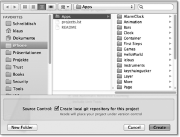Abbildung 7.43 Erzeugen eines lokalen Git-Repositorys
Bis auf das einmalige Anlegen des Repositorys beim Erzeugen eines Projektes besteht die weitere »Mehrbelastung« durch Git für den Programmierer lediglich darin, Änderungen am Quelltext ins Repository zu übertragen. Meist führt man diesen Schritt vor und/oder nach größeren Änderungen durch, um im Problemfall den vorherigen Stand einfach wieder herstellen zu können. Auch ist es ratsam, Meilensteine und Releases als Versionsstand einzuchecken. Wie die Arbeit mit Git praktisch funktioniert, zeigen die folgenden Absätze.
Xcode zeigt bei der Arbeit mit einem Projekt über Markierungen im Navigationsbereich Informationen zur Versionsverwaltung an. Ein kleines M rechts neben dem Dateinamen zeigt z. B. an, dass die betreffende Datei modifiziert wurde und vom Stand im Repository abweicht (siehe Abbildung 7.44).
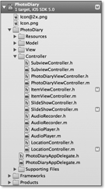Abbildung 7.44 Geänderte Dateien in der Navigationsansicht
Das Hinzufügen der Änderungen zum Repository erfolgt über einen Rechtsklick auf die betreffende Datei und die Auswahl des Menüpunktes Commit selected file (siehe Abbildung 7.45) ...
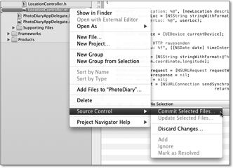Abbildung 7.45 Hinzufügen einer Änderung zum Git-Repository
... oder über das Xcode-Menü File · Source Control · Commit. Letzteres fügt alle Änderungen am Projekt ins Repository ein, das Kontextmenü einer einzelnen Datei nur die Änderungen an dieser betreffenden Datei.
Nach dem Aufruf des Commit-Befehls öffnet sich eine neue Ansicht, in der links im Navigationsbereich die geänderten Dateien aufgeführt sind. In der Mitte und rechts befinden sich zwei Editor-Ansichten, die für jede links ausgewählte Datei die Änderungen visualisiert, die ins Repository übertragen werden sollen. Im unteren Bereich des Fensters befindet sich ein großes Textfeld, in das Sie einen Text für diesen Versionsstand eintragen können und sollten (siehe Abbildung 7.46). Dieser Text hilft Ihnen bei späteren Arbeiten mit älteren Versionen, die jeweiligen Änderungen nachzuvollziehen. Überdies ist dieser Text für andere am Projekt mitarbeitende Entwickler die Dokumentation zur Änderung.
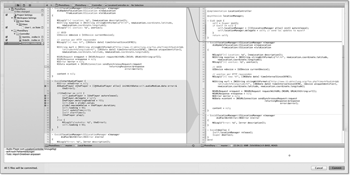Abbildung 7.46 Der Diff-View vor dem Commit ins Repository
Um sich die History eines Projektes im Git-Repository anzusehen und um auf ältere Versionen zurückzugreifen, benötigt man den Organizer von Xcode. Dieser stellt unter dem Punkt Repositories eine Übersicht der Git-Repositorys dar, die Xcode kennt (siehe Abbildung 7.47).
Über den Organizer können Sie auch entfernte, d. h. im Netzwerk oder im Internet liegende Repositorys einbinden. Um beispielsweise das Repository mit dem Beispielcode aus dem Buch einzubinden, rufen Sie den entsprechenden Dialog auf, indem Sie auf das Plus-Zeichen unten links im Fenster klicken (siehe Abbildung 7.48).
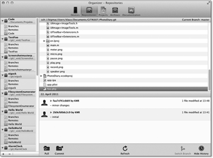Abbildung 7.47 Die Repository-Verwaltung im Organizer
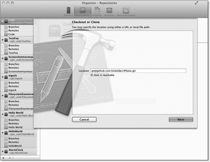Abbildung 7.48 Hinzufügen des Repositorys mit den Buch-Beispielen
Tragen Sie im Feld Location die folgende Adresse ein, und warten Sie, bis die Anzeige darunter auf Grün wechselt. Dann hat Xcode den Host kontaktieren können und als gültig vermerkt:
git@github.com:hinkeldei/iPhone.git
Legen Sie danach noch den Namen des lokalen Repositorys an, also den Namen, unter dem Xcode das Repository speichern soll. Der Übersichtlichkeit halber empfiehlt es sich hier, denselben Namen wie auf dem Server zu verwenden: iPhone (siehe Abbildung 7.49).
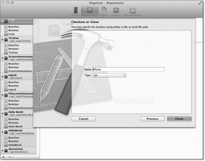Abbildung 7.49 Der lokale Name des Repositorys
Anschließend starten Sie über den Button Clone den Kopiervorgang, bei dem Xcode bzw. Git das entfernt liegende Repository auf Ihren Rechner kopiert. Diesen Vorgang nennt man im Git-Vokabular klonen.
In Abhängigkeit von der Größe des Repositorys und der Bandbreite Ihrer Internet-Anbindung kann der Vorgang einige Minuten in Anspruch nehmen. Anschließend haben Sie eine lokale Version, in der Sie nach Belieben arbeiten können. Alle Ihre Änderungen an dem Code landen im lokalen Repository. Falls Sie irgendwann der Meinung sind, dass Ihre Arbeit der Allgemeinheit zugänglich sein sollte, übertragen Sie Ihr lokales Repository zurück auf den Github-Server.
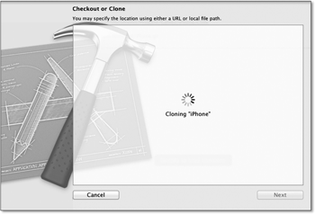Abbildung 7.50 Xcode erstellt eine lokale Kopie des Repositorys.
Leider war zum Zeitpunkt der Manuskripterstellung die Stabilität von Xcode bei der Verwendung weitergehender Git-Funktionen noch recht bescheiden, sodass Sie im nächsten Abschnitt einen Überblick darüber erhalten, wie Sie über die Kommandozeile respektive mit dem Tool GitX mit Git arbeiten können.
7.4.2 Git ohne Xcode
Die Verwendung von Git auf der Kommandozeile ist für Ungeübte wie jede Art von Kommandozeilenarbeit eher undurchsichtig. Hilfreich ist da das Tool GitX, das eine komfortable GUI für die Arbeit mit Git bietet, ohne dabei mit den Kinderkrankheiten von Xcode 4 kämpfen zu müssen.
GitX ist Open Source und somit kostenlos. Sie erhalten es auf der Webseite des Projekts unter http://gitx.frim.nl/. Die Installation erfolgt wie auf dem Mac üblich und besteht darin, dass Sie das Icon in den Ordner Programme ziehen. Nach dem Start geben Sie den Speicherort eines bereits vorhandenen Repositorys an, und GitX stellt alle Informationen übersichtlich zur Verfügung (siehe Abbildung 7.51).
GitX zeigt im oberen Teil des Fensters übersichtlich alle im Git-Repository abgelegten Versionen an und im unteren Teil Details zu den Versionen (betroffene Dateien und alle Änderungen in diesen Dateien). Über den Button Create Branch können Sie einen neuen Entwicklungszweig erstellen. Darin liegt der besondere Reiz von Git, denn die Arbeit mit Branches war beim ehrwürdigen CVS schlichtweg eine Quälerei; unter Git gehört das Erstellen von Branches zum Standard-Repertoire.
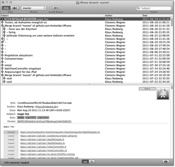Abbildung 7.51 Die GUI von GitX
Branches sind dann nützlich, wenn Sie neue Funktionalitäten probieren wollen, die erst zu einem späteren Zeitpunkt in die App einfließen sollen, z. B. weil die Implementierung einen längeren Zeitraum beanspruchen wird, Sie aber parallel an der funktionierenden Version der App weiterarbeiten möchten. Zu einem späteren Zeitpunkt können Sie dann Branches miteinander verschmelzen und so die neue Entwicklung in die App einfließen lassen.
Neben GitX gibt es noch ein Programm für den Zugriff auf Github [39](https://github.com/). Github ist ein Hosting-Dienst für Git-Repositorys, auf dem sich zahlreiche bekannte und weniger bekannte Open-Source-Projekte befinden und bei dem man unentgeltlich eigene Projekte hosten kann. Kostenpflichtig ist bei Github nur das Anlegen privater Repositorys, also von Repositorys, auf die nur bestimmte Benutzer zugreifen können. Der Code zum Buch lag beispielsweise während der Entwicklungszeit des Buches in einem privaten Repository, aber mit der Veröffentlichung des Buches haben wir das Repository in ein öffentliches umgewandelt, um den Lesern den Zugriff auf den Code zu ermöglichen.
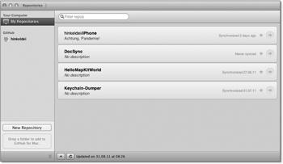Abbildung 7.52 Übersicht geklonter Github-Repositorys im Github-Client
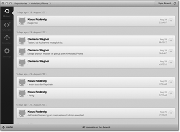Abbildung 7.53 Details zu einem Repository im Github-Client
Neben allen Annehmlichkeiten, die die verschiedenen Git-Clients bieten, kann Git seine Mächtigkeit nur bei der Verwendung des Kommandozeilen-Interfaces ausspielen. Im Folgenden finden Sie eine Übersicht der grundlegendsten Befehle; ein tiefergehendes Tutorial zum Umgang mit Git auf der Kommandozeile finden Sie auf der Website zum Buch. Den Kommandozeilen-Client von Git haben Sie mit Xcode installiert, sofern Sie bei der Installation die System Tools ausgewählt haben (Standard-Einstellung).
| Befehl | Bedeutung |
| git init | Umwandeln des aktuellen Verzeichnisses inklusive aller Unterverzeichnisse in ein Git-Repository |
| git add . | Hinzufügen aller Dateien und Verzeichnisse im aktuellen Git-Verzeichnis zum Repository |
| git commit –m "TEXT" | Erzeugen einer neuen Version mit dem angegebenen Text |
| git add <DATEI> | Hinzufügen der Datei <DATEI> zum Repository |
| git rm <DATEI> | Löschen der Datei <DATEI> aus dem Repository |
| git mv <DATEI> <DATEI_NEU> | Umbenennen der Datei <DATEI> in <DATEI_NEU> |
| git log | Anzeige aller protokollierten Änderungen im Repository |
| git checkout <HASH> | Auschecken eines bestimmten Versionsstandes. Der Hash einer Version ist der aus der Anzeige von git log. |
| git clone git@github.com:hinkeldei/iPhone.git |
Das Github-Repository zum Buch lokal klonen (oder ein beliebiges anderes entferntes Repository) |
| git pull | Die lokale Kopie (»den Klon«) eines entfernten Repositorys auf den aktuellen Stand bringen |
| git push | Die lokalen Änderungen in das entfernte Repository schieben |
Ihr Kommentar
Wie hat Ihnen das <openbook> gefallen? Wir freuen uns immer über Ihre freundlichen und kritischen Rückmeldungen.


{kind=link}
{kind=link}
{kind=link}
{kind=link}
{kind=link}
{kind=link}
{kind=link}
{kind=link}
{kind=link}
{kind=link}
{kind=link}
{kind=link}